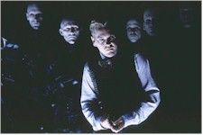

The Crow, director Alex Proyas' acclaimed American debut feature was one of my favorite films of 1994, and that despite the untimely death of its star Brandon Lee almost dooming the film to realm of the unreleased. With Dark City he returns to his native Australia and Proyas has crafted a dark, fantastic world that immediately engages your imagination. Part sci-fi thriller, part haunting 1940s film noir set piece, Dark City has lots of pizzazz, but too little punch. It's as if the world's heavyweight champion, on the verge of the knockout, throws in the towel. For all the marvelous production design, awe-inspiring special effects, effectively-lit camera work, and hellish makeup, I left the movie empty of satisfaction, a Blade Runner gone awry ... Twilight Zone without Rod Serling.
The plot blends elements from Kafka and H.G. Wells with a dash of Dashiell Hammett, and it does demand more than a casual viewing to both absorb the paranoid, comic book fantasy and the extensive landscape of the operating theater where the mental surgery occurs. It's a world of nightmares and lost memories, the manifestation of an alien race known as The Strangers,

who experiment on a city of amnesiacs. John Murdock (Rufus Sewell) awakens in a room with a dead hooker and immediately goes on the defensive from accordion-playing Police Inspector Frank [why not Dagwood!] Bumstead (William Hurt) and also from the mass of gangly, leather-clad, pale-faced, bald-headed, raspy-voiced Strangers, all retro bedecked in deference to Max Schreck's vampire in Nosferatu (1922). Every night at midnight (did you expect maybe 2:13 AM?), the puppet-masters engage in a telepathic, teeth-chattering group mind meld in their vast subterranean lair. The unnamed Metropolis slows to a stop — cars brake, people freeze in their places or plop into their food. John has managed to unstick himself from the Strangers' thoughts and while trying to pull his confused mind together discovers that he has been endowed with the alien ability to Tune, i.e. telepathically alter reality. When the bad guys Tune, the earth literally moves and shakes — buildings erupt and disappear, walls reshape, neighborhoods change in an instant. They are aided by Dr. Daniel Schreber (Kiefer Sutherland), a wimpy, limpy sell-out in the Renfield/Mad Scientist role. The doctor may be stilted in speech, but he manages to mix up the nocturnal batches of conveyor-belt memories that are imprinted into all the human guinea pigs during the nightly time out. Seems they are on a holy quest for the human soul. Not much is put into their reason for this who charade beyond that.The oversized city stage — the largest indoor set ever built in Australia — does entrance. Production designers George Liddle and Patrick Tatopoulos (Independence Day) are part of the technical mix that includes longtime (in music videos and commercials) collaborator costume designer Liz Keogh and from The Crow, director of photography Dariusz Wolski (Crimson Tide) and editor Dov Hoenig (Heat and The Fugitive). Everyone does a top notch job, and the gargantuan creation might just give Titanic it's first real taste of competition. The cast, regrettably, held hostage inside this Edvard Munch world. Green-eyed Sewell, the musk hulk presence in Cold Comfort Farm does appear to have been truly discovered by Hollywood, as he is also starring in the long delayed Dangerous Beauty. He gets to push a gondola in both flicks and it seems he gets left holding the stick, more so in the Venetian pseudo-epic (a Cliff's Notes version at that). Connelly has run hot, cold, and steamy since her debut in Sergio Leone's Once Upon a Time in America (1984). She's a sexy bauble as the voluptuous chanteuse Emma and John's doting wife. She isn't offered much to work with. Even her singing voice gets dubbed. The Strangers all fall from the same mold and are named after short words — Mr. Hand (Richard O'Brien), Mr. Book (Ian Richardson), Mr. Wall (Bruce Spence) among their leaders, but also assisted by Messrs. Rain, Sleep, and Quick. They're mean, lean, and floating machines.
While Proyas tunes in a battle royale in the mindfight at the Strangers' Corral, he is failed to engage me in a thought provoking piece. The ultimate discovery and quest for Shell Beach, John's fuzzy, sun-drenched childhood home seems like a color-drained tacked-on afterthought. All through the film he's asking everyone how to get there and no one remembers. Like the Strangers, Proyas and his screenwriters have failed to find a key component in this dazzling film — a soul.